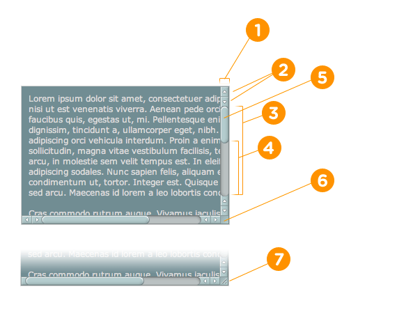

::-webkit-scrollbar //滚动条整体部分，其中的属性有width,height,background,border（就和一个块级元素一样）等。（位置1）
::-webkit-scrollbar-button //滚动条两端的按钮。可以用display:none让其不显示，也可以添加背景图片，颜色改变显示效果。（位置2）
::-webkit-scrollbar-track // 外层轨道。可以用display:none让其不显示，也可以添加背景图片，颜色改变显示效果（位置3）
::-webkit-scrollbar-track-piece //内层轨道，滚动条中间部分（位置4）
::-webkit-scrollbar-thumb //滚动条里面可以拖动的那部分（位置5）
::-webkit-scrollbar-corner //边角（位置6）
::-webkit-resizer //定义右下角拖动块的样式（位置7）